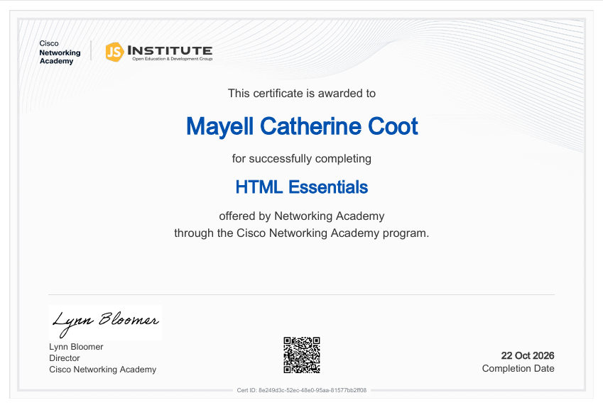
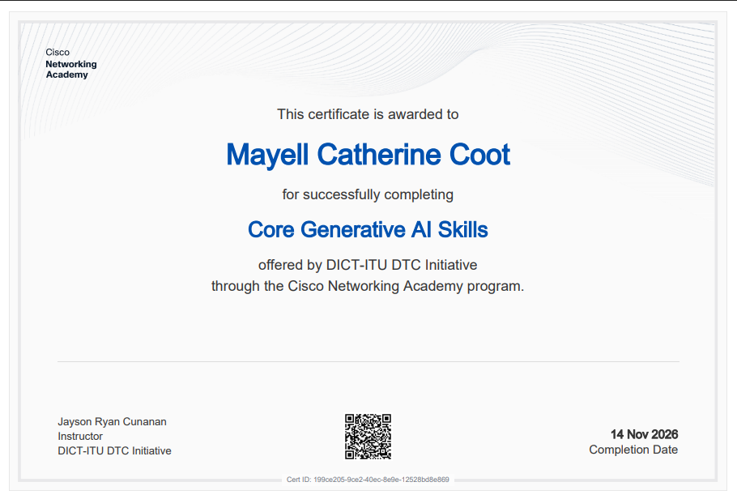

Technology
Exploring new technologies and learning how they work.
WELCOME TO MY PORTFOLIO!
I am a first-year BSIT student who enjoys learning about technology and exploring creativity through web development and digital design. This portfolio shares my learning journey, skills, and achievements.
Discover MoreGET TO KNOW ME
A little introduction to who I am and what inspires my IT journey.
Hello! I'm Mayell Catherine Coot, a first-year Bachelor of Science in Information Technology student from section BSIT 1B.
I enjoy exploring Information Technology, especially web development and creative digital design. I am interested in how technology works and how it can be used to create useful and meaningful things. I look forward to learning new concepts and improving my skills through different activities and experiences.
My journey in IT is just beginning, and there is still a lot for me to explore. I want to keep challenging myself, become more confident in my abilities, and gain the knowledge and experience needed to become a skilled IT professional.
Exploring new technologies and learning how they work.
Learning to build and design websites.
Turning ideas into creative and visually appealing designs.
Trust yourself and create your own path.
WHAT I CAN DO
Skills I am developing as I continue learning and growing in IT.
MY LEARNING JOURNEY
These certificates represent knowledge and skills I have gained through Cisco Networking Academy.
Select a certificate to view it in full size.

CISCO NETWORKING ACADEMY
October 22, 2026
CISCO NETWORKING ACADEMY
October 25, 2026

CISCO NETWORKING ACADEMY
November 14, 2026
LET'S CONNECT
Thank you for visiting my personal portfolio. I appreciate your time and interest in my learning journey.